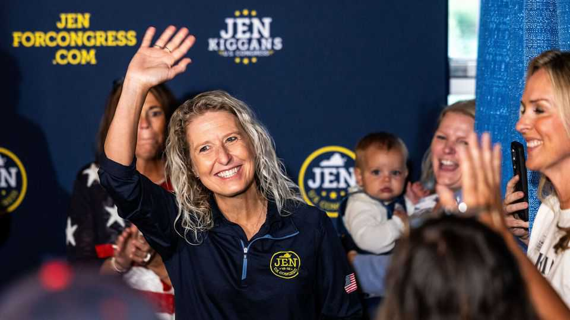
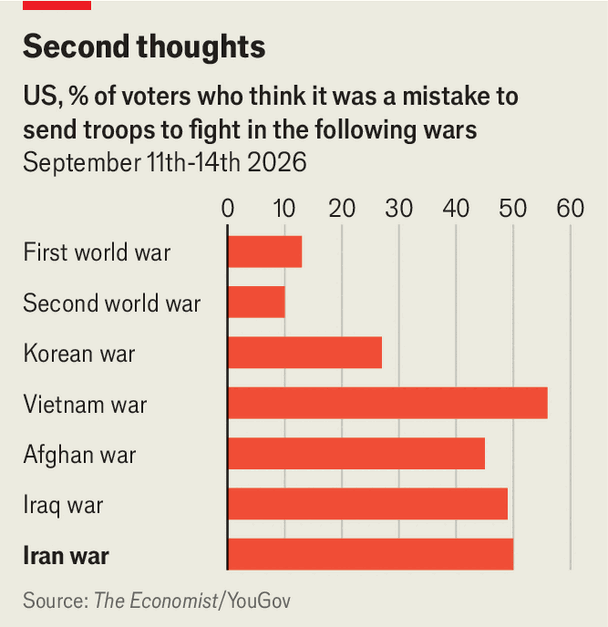

Will Congress ever assert itself on Iran?
If Democrats win the midterms, they may try

Oct 8th 2026
A preacher kicked off the campaign rally with prayers and a prediction: the regime in Iran “shall fall and a new government will come”, allowing Christian churches “to multiply there”. Several Republican notables took the stage, followed by the main attraction, Jen Kiggans, a two-term member of the House of Representatives for Virginia’s 2nd district, who told the crowd that her uphill re-election contest was “the fight of our lives”.
America’s war with Iran looms large in this closely contested race, one of several dozen that will determine whether Democrats can win control of the lower chamber of Congress, and if they do, by how many seats. Ms Kiggans is a former navy helicopter pilot. Her Democratic opponent, Elaine Luria, is also a former navy officer who held the seat before Ms Kiggans. The district hosts a naval air base that dispatched fighter jets to the Middle East in September; military veterans make up about 15% of the adult population.

American voters already regard the war in Iran as a mistake on par with the disastrous war in Iraq, which lasted nearly nine years and during which more than 4,000 American military personnel died (see chart). Yet Congress is polarised and paralysed, unable to translate public dissent into pressure on Donald Trump to resolve the conflict. The race in Virginia’s 2nd district suggests why: though some Republican candidates in midterm races have called for the war to end, Ms Kiggans is among the great majority who have backed Mr Trump to the hilt. She accuses Ms Luria, a critic of the war, of adopting “a pro-Iran stance, an antimilitary stance”.
This is a risky strategy in a swingy district like Virginia’s 2nd. Ms Kiggans is an energetic pragmatist praised even by some of her opponents for her constituent service. Mr Trump has rewarded her positioning with public praise; Republican leaders are campaigning at her side. But Ms Kiggans has set up her re-election bid as a referendum on the president and his war in territory that Mr Trump carried by less than a percentage point in 2024, and that the current Democratic governor of Virginia, Abigail Spanberger, won by 7.6 points just a year ago.
Sensing opportunity, Democratic stars with military credentials are flying in to bolster Ms Luria. On October 6th Mark Kelly, an Arizona senator and former navy combat pilot and astronaut, campaigned with her in Virginia Beach. At a roundtable with local veterans, Mr Kelly and Ms Luria nerded out on the war’s effects on local shipyards, military readiness, munition stocks and Pacific deployments. Ms Luria predicted that successive long deployments of aircraft carriers, some stationed nearby at the naval base in Norfolk, “will take decades to recover from”.
If Democrats do retake one or both chambers of Congress, they will have limited practical means to influence Mr Trump. One lever is the budget, which the legislature writes. But defying a president, even an unpopular one, by withholding military expenditures during war is “not a good look”, notes Todd Belt, a political scientist at George Washington University.
Another way for Congress to reassert its authority over war-making would be to revise the Authorisation for Use of Military Force (AUMF), which was passed after the attacks of September 11th and granted the White House broad powers to wage war against those responsible. Successive administrations have interpreted that authority expansively, with little pushback from lawmakers. “Members of Congress have been unwilling to show a tiny bit of moral courage” on the AUMF, says Rebecca Bennett, a Democrat and former navy helicopter pilot who is favoured to flip a Republican-held House seat in northern New Jersey. “This is about making sure we have a Congress that is doing its job.”
Mr Trump has not invoked the AUMF with regard to Iran, relying instead on his constitutional authority as commander-in-chief. If Democrats take control of either chamber in November, however, they will have another tool at their disposal: congressional oversight. In interviews Mr Kelly and Ms Luria raised the possibility of issuing subpoenas and calling witnesses to investigate the war. “Why did Donald Trump do this?” Mr Kelly asks. Topics he thinks are ripe for congressional investigation include the role of Pete Hegseth, the secretary of war, the number of civilian casualties, the extent of munition shortages and the lack of an exit strategy.
Republicans have used congressional hearings about wartime failures to bludgeon Democrats ahead of presidential elections. Most recently, a Republican probe of the Biden administration’s botched evacuation from Afghanistan provided ammunition for Mr Trump’s 2024 campaign against Kamala Harris. Democratic leaders may be similarly tempted to probe the Iran war’s planning and execution, including the roles of J.D. Vance and Marco Rubio, both potential Republican contenders in 2028. “I think we need the investigation,” Mr Kelly says, “because I think this rises to the level of recklessness.”■
Stay on top of American politics with The US in brief, our daily newsletter with fast analysis of the most important political news, and Checks and Balance, a weekly note that examines the state of American democracy and the issues that matter to voters.